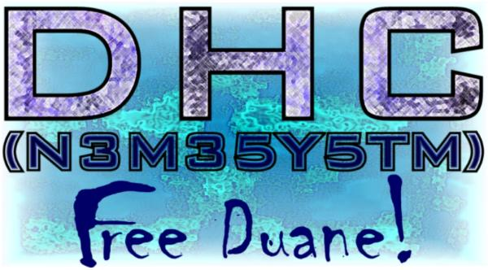

[DHC]
(nemesystm)
When you get hit by a blast from the past you'll realize you didn't become what you wanted.
ICQ#55155478
Admin: mail me and I'll tell you what's wrong
Oh, and I think we should set Duane free. FREE DUANE!

Pigs
Whilst the world is away in dreamland. I stay awake fueling my fire. The pain and anger that burns inside of me is because of what I see. The public, to me, don't have their eyes open. What I'm talking about is world orders. The governments, corporations, companys, CEO's, and such. They don't want you to see what I see. For instince, Echelon, a covert government organization that monitors all the activities of every human in existance. How do I know you may ask? Believe me, they're there. They've always been there.
Bastards
The phone companys, the ISP's, the cable companys, etc. These are the bastards. Do you think it really costs Bell Atlantic $7.50 American dollars to call the UK for 10 mins? No, shit, it's only $0.01 a minute from US to Japan. They just want your money. Do you think it actually costs $21.95/month for Internet Service? No, if it was really that expensive for you to connect to the internet through them they'd be outta business. ISP's shouldn't charge but a maximum of $5.00/month. Why do you think FreeI and NetZero are free then? Believe me banners don't pay off. Finally, the television. Man's best creation. Average Americans spend about 6-7 hours a day watching a box with a screen thats costs them $50.00/month when it costs the Cable provider $0.75/month to play it. These are the bastards.
Extreme Fux0rs
They are the people that cannot take the blame. If you think about it all the blame in this whole entire world comes down to juveniles. Think about it. In hacking cases, most hackers are between the ages of 16 to 20. This is a juvenile age. The whole reason all this happens is because of the Pigs, and the bastards don't like what the pigs did so the increase prices, then the supposed "juvenile delinquents" can't afford anything so they must steal it. This is why they're Phreakers, hackers, carders, etc. If we can't have what could be dirt cheap, we'll work are way into getting it no matter what the Pigs say. So, if you look at it correctly, it creates a gigantic loop. From pigs to bastards to pigs to bastards and so on and so on.
On a happy note, I'll be seeing my love on Tuesday.
Peace,
Aero